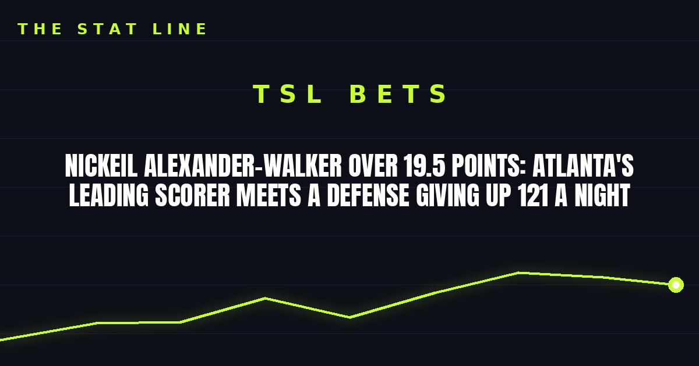

Nickeil Alexander-Walker Over 19.5 Points: Atlanta's Leading Scorer Meets a Defense Giving Up 121 a Night
Nickeil Alexander-Walker leads Atlanta at 20.5 points per game, and tonight he faces a New Orleans team allowing 121.6 a night without its starting center. The over 19.5 points is the play.

Game slip: Atlanta Hawks at New Orleans Pelicans
• Matchup: Atlanta Hawks (3-3) at New Orleans Pelicans (1-4)
• Time/channel: Saturday, 7:00 p.m. ET, NBA League Pass, from Smoothie King Center in New Orleans
• Odds (consensus): Hawks -4.5; total 239.5; Hawks moneyline -170
• Injury report: Hawks — Mouhamed Gueye out (foot fracture, post-surgery), Henri Veesaar out for the season (torn ACL). Jock Landale (nasal fracture) is available. No day-to-day questions in the rotation. Pelicans — Jordan Poole out (ankle), Yves Missi out (knee bone bruise), Dejounte Murray questionable (personal reasons). The Pelicans' absences are priced into the number; nothing here is a fresh surprise.
• Storylines: (1) Atlanta snapped a three-game skid by edging Cleveland 114-111 on Thursday, with the starting five of Okongwu, Jalen Johnson, CJ McCollum, Alexander-Walker and Dyson Daniels intact. (2) New Orleans snapped a four-game losing run by beating Sacramento 132-120 on Thursday — but still gave up 120 points to the league's worst team. (3) The statistical gap is real: Atlanta scores 120.2 per game and allows 114.5; New Orleans scores 116.3 and allows 121.6, and Atlanta creates 32.5 assists per game to New Orleans' 25.2.
The bet: Nickeil Alexander-Walker over 19.5 points
This is a player-prop play built on role and matchup, not a hunch. Alexander-Walker leads Atlanta in scoring at 20.5 points per game, and he is doing it as a full-time starter in a five-man unit that is finally settled. Tonight's matchup is the softest kind: a Pelicans defense allowing 121.6 points a night, now without starting center Yves Missi to protect the rim and without Jordan Poole's scoring to keep the game close enough to matter late.
The honest caveats: McCollum and Daniels both shot terribly against Cleveland (a combined 3-for-16), and if either bounces back big, Alexander-Walker's touches dip. And if Atlanta builds a big lead, starters could sit the last few minutes. But 19.5 is below his season average against a bottom-tier defense missing its center — the number is fair, and the matchup tilts over.
If gambling stops being fun, call 1-800-GAMBLER.
Sources: Sports Mole — Hawks vs. Pelicans preview, FanDuel Research — NBA odds, October 31, Gridiron & Wine — NBA odds board